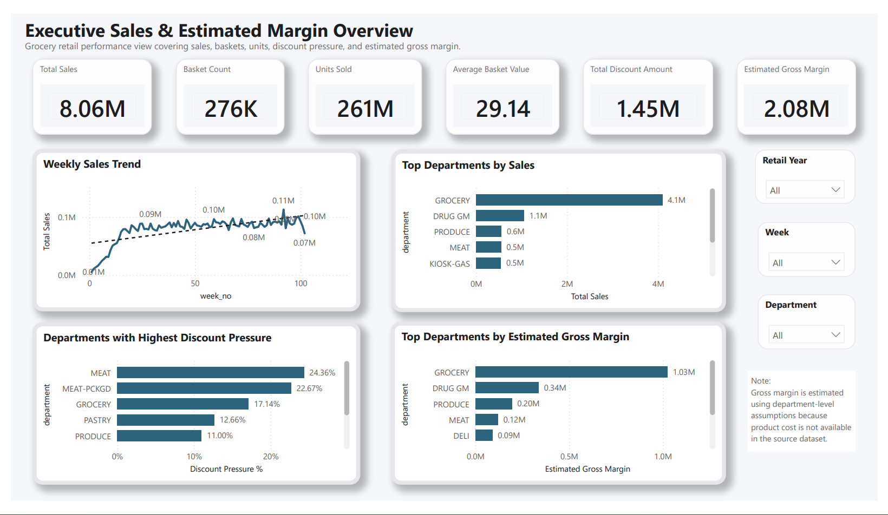
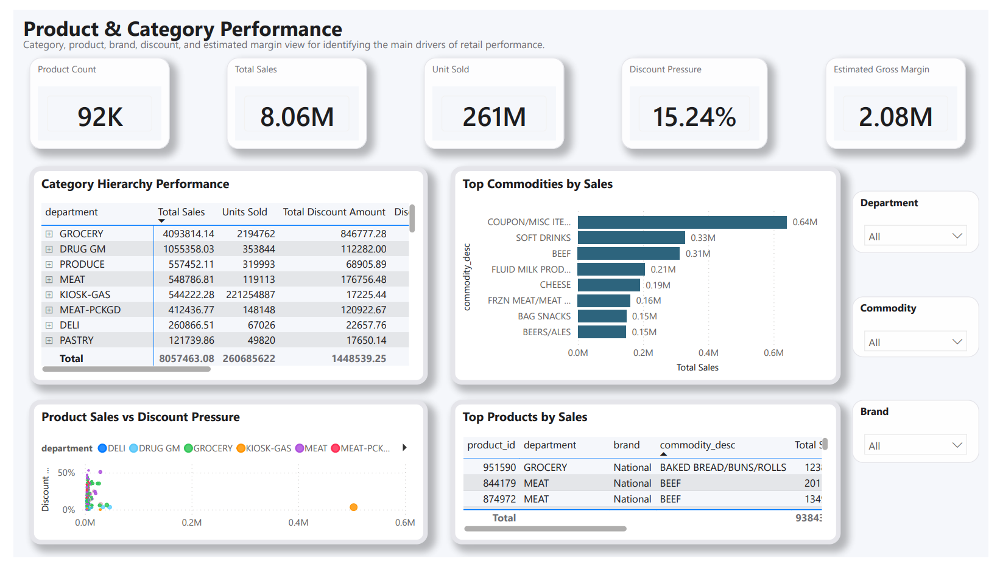
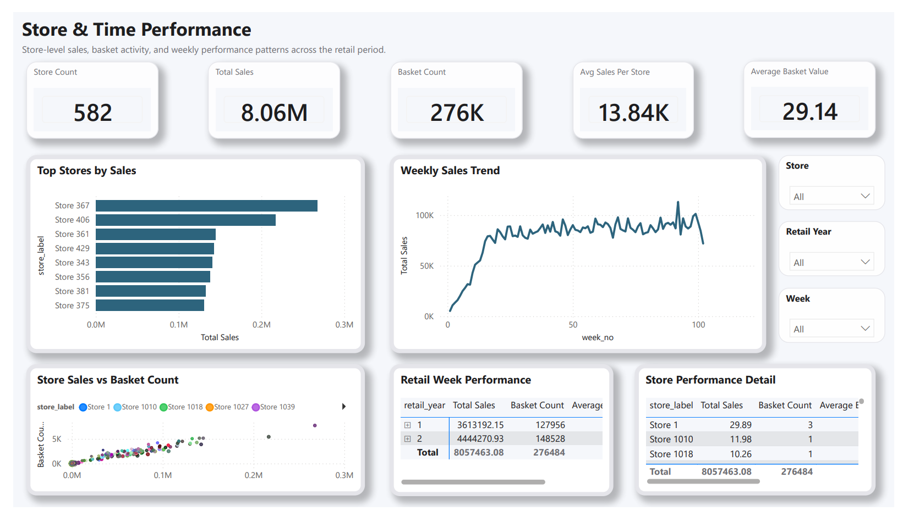
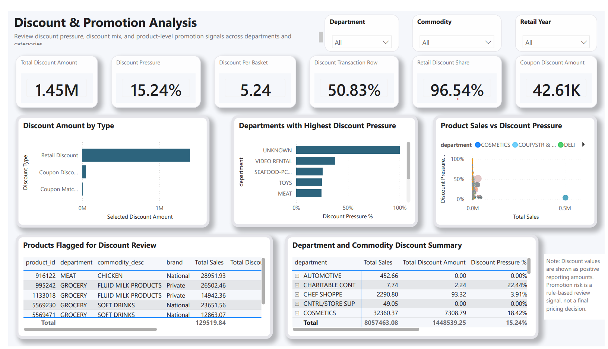
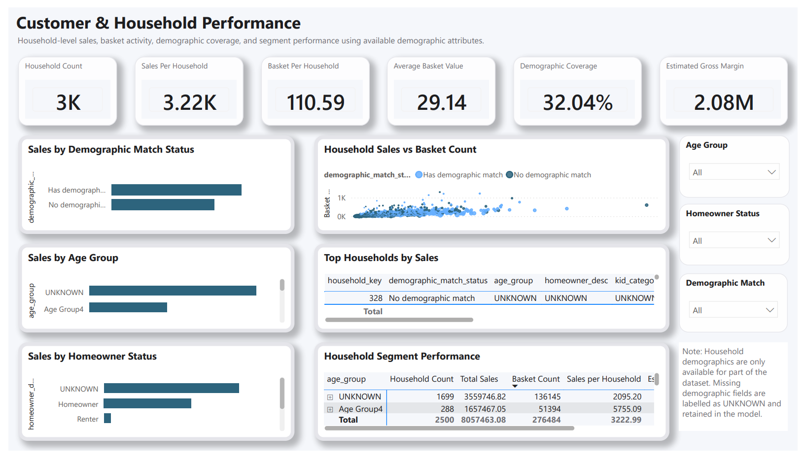
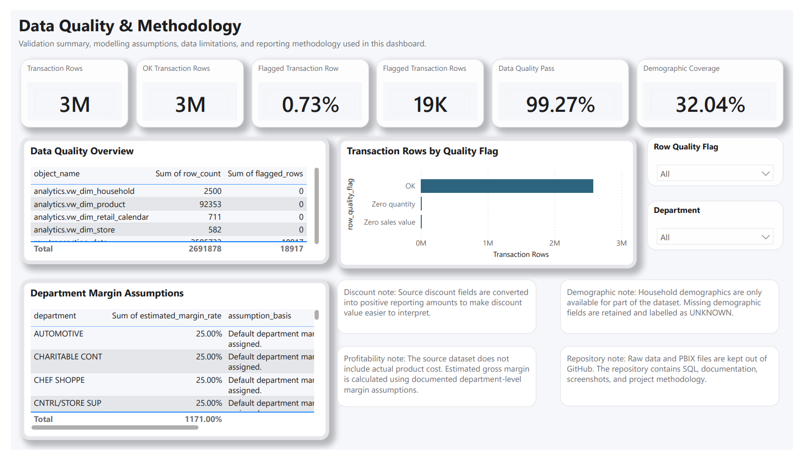

Executive Overview
High-level sales, basket, discount and estimated margin view.
Page 01

I built this project to explore how a grocery retailer could review sales, baskets, stores, product categories, discounts and household behaviour in one place. PostgreSQL and SQL handle the data preparation, while Power BI brings the final report together.

The project starts with grocery transaction files, moves through PostgreSQL and SQL checks, and ends with a Power BI dashboard designed for quick business review.
I loaded the raw files into PostgreSQL and kept the original data separate from the reporting layer.
I checked row counts, joins, missing values, discount fields and the main KPI results before designing the report.
I built six Power BI pages with a simple layout, clear KPI cards and a soft visual style.
The Power BI screenshots stay exactly as they are. I changed only the portfolio page layout so each dashboard page has enough space to be viewed properly.
High-level sales, basket, discount and estimated margin view.

Department, category and product contribution.

Store contribution and retail week movement.

Discount pressure and products marked for review.

Household value and demographic availability.

Checks, limitations and estimated margin assumptions.

I wanted the dashboard to be useful, but also honest about what the source data can and cannot support.
The dataset includes sales and discounts, but it does not include actual product cost. Because of that, I used documented department-level assumptions to calculate estimated gross margin. It should be read as a comparison measure, not exact accounting profit.
Household demographic information is only available for part of the dataset. Missing demographic values were kept as UNKNOWN instead of removing valid sales transactions.
I practised preparing data, checking quality, building a model, validating measures and presenting the results clearly. The softer page design is only the presentation layer; the main focus is still the analysis and the methodology behind it.